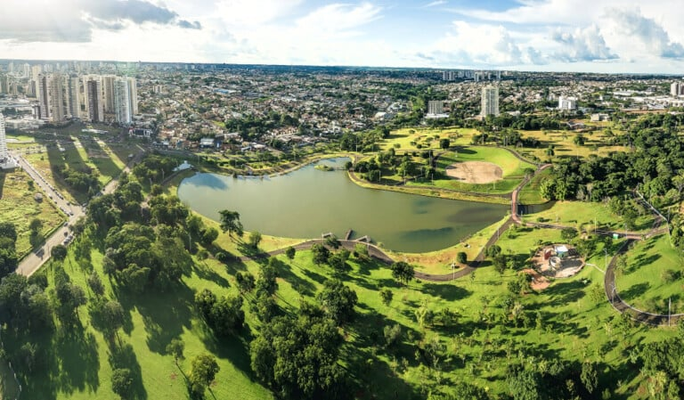

Mato Grosso do Sul é um estado localizado na região Centro-Oeste do Brasil, conhecido por suas paisagens de cerrado, pantanal e rios. Sua economia é bastante baseada na agropecuária, com destaque para a produção de soja, milho, carne bovina e produção de alimentos. O estado é famoso pelo Pantanal, uma das maiores áreas alagadas do mundo, que é um verdadeiro santuário de biodiversidade, com uma grande variedade de animais e plantas. A capital de Mato Grosso do Sul é Campo Grande, uma cidade moderna e acolhedora, que combina desenvolvimento com a beleza natural da região. É um lugar que oferece uma mistura de natureza exuberante e atividades econômicas fortes!
